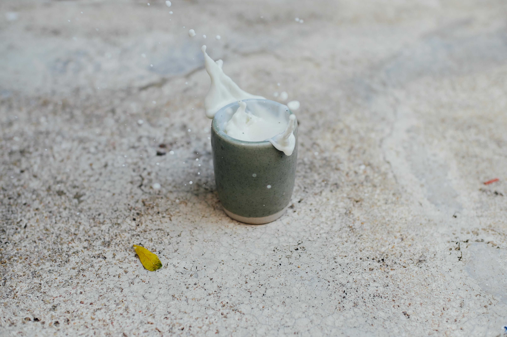

텀블벅(tumblbug)은 대한민국에서 서비스 중인 대표적인 크라우드 펀딩 사이트 중 하나로 예술, 문화 컨텐츠를 중점적으로 다루고 있다. 특히 그 중에서도 독립적인 문화창작자들의 지원을 목표로 한다. 
텀블벅(tumblbug)은 "후원금 마련에 성공한" 프로젝트에 한하여 유지비용으로 후원금의 8%에 해당하는 수수료를 받는다. (후원자들의 결제 수수료까지 포함하면 10% 미만이다. 다른 크라우드 펀딩 회사에 비해 조금 저렴한 편이다.)